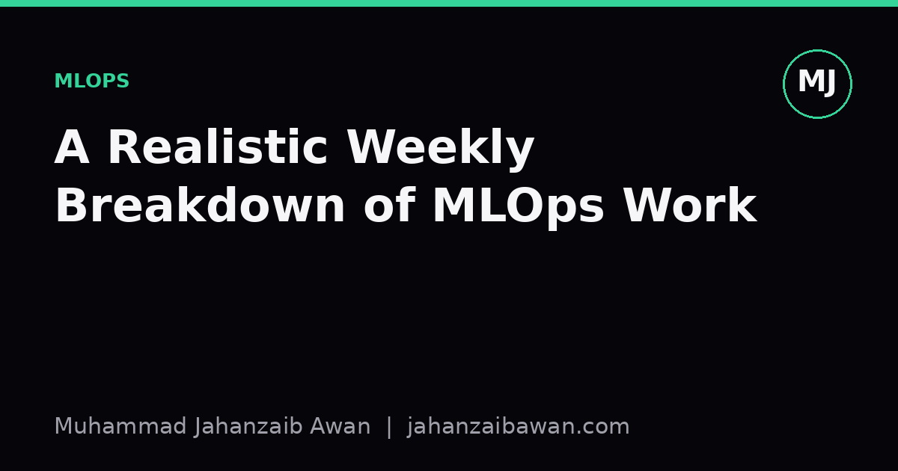

A Realistic Weekly Breakdown of MLOps Work
Not glamorous, not constant firefighting either. Here is what actually fills the week when you maintain machine learning systems in production.

The job is mostly maintenance, not model building
When people outside the field imagine MLOps, they usually picture someone training the next model, tuning hyperparameters, chasing an extra point of accuracy. In practice, once a model is in production, that work becomes a small fraction of the week. Most of the time goes into keeping a system that already works from quietly breaking. This distinction matters because it changes what you should actually optimise for: not novelty, but stability and observability.
Consider a mid-sized team running a handful of models in production, say a churn predictor, a fraud flag, and a recommendation ranker. None of these need retraining every day. What they need is constant low-level attention: is the input data still shaped the way the model expects, are predictions still landing within a sane distribution, did a silent schema change upstream break a feature. This is the unglamorous 80% of the job, and it is where most production incidents actually originate, not from bad modelling choices but from small, unannounced changes in the surrounding system.
A realistic week, then, looks less like a research sprint and more like the maintenance schedule of any other piece of critical infrastructure. I find it useful to think in terms of daily checks, a couple of mid-week investigations, and one or two structured reviews near the end of the week. None of it is dramatic on its own, but skipping any part of it for a few weeks in a row is exactly how a model quietly degrades until someone in a business meeting asks why conversion dropped three weeks ago.
Monday to Wednesday: monitoring, drift, and small fires
Monday usually starts with a review of the weekend's pipeline runs. Batch jobs that retrain or refresh features often run overnight or over the weekend when traffic is low, so the first task is simply confirming they completed, checked their outputs against expected row counts, and did not silently write an empty table because an upstream source was late. This sounds trivial until you have seen a dashboard populated with zeros for two days because nobody checked a cron job's exit code.
Data drift monitoring tends to sit in the middle of the week. Say a model was trained on customer ages with a mean of 34 and a standard deviation of 11. A weekly drift report might flag that the mean has crept to 39 over the last month. On its own that is not alarming; customer bases shift seasonally. But paired with a feature importance ranking that shows age as the second most influential input, it is worth fifteen minutes to check whether the shift reflects a genuine change in the customer base or a broken join that is quietly excluding younger users from a recent extract. Distinguishing a real distribution shift from a pipeline bug is one of the most common judgement calls in the role, and getting it wrong in either direction is costly: over-react and you retrain unnecessarily on bad data, under-react and a real shift erodes model performance for weeks before anyone notices.
Tuesday and Wednesday are usually when smaller fires get put out: an alert that a feature store query is timing out under load, a scheduled job that started failing after a library was silently upgraded, a request from a downstream team that a prediction endpoint is returning malformed JSON for a small percentage of requests. Individually these are small. Collectively, if left unaddressed, they are exactly the kind of accumulated technical debt that eventually causes a much larger outage. Triage here is a skill in itself: knowing which alerts genuinely need same-day attention and which can be batched into a Friday cleanup without risk.
Thursday: dependency, retraining, and reproducibility checks
Thursday is often when I look at the less urgent but higher-leverage maintenance work: dependency upgrades, retraining cadence, and reproducibility. Machine learning stacks accumulate dependencies quickly, and a minor version bump in a serialization library or a numerical package can silently change model output in ways that are hard to detect without a proper regression test. A sensible habit is keeping a small held-out validation set with known expected predictions, and rerunning it after any dependency change, checking not just that the pipeline runs but that outputs match within a tight tolerance, say within 0.001 of the previous version's probability outputs. If they do not match, that is worth investigating before the change ships, not after.
Retraining itself, when it happens, is rarely the free-form experimentation people imagine. It usually follows a fixed, boring procedure: pull the latest data up to a leakage-safe cutoff date, run the same feature pipeline as production, retrain with the same hyperparameters unless there is a documented reason to change them, and compare the new model against the current production model on a fixed, held-out evaluation set that never gets touched during development. If the new model scores 0.812 AUC against the incumbent's 0.807, that is a real but modest improvement, and the honest next question is whether the gap is stable across a few different random seeds or evaluation slices, or whether it is noise. Shipping a marginally better model on the strength of a single lucky split is a classic way to quietly degrade production performance while your offline metrics look fine.
Reproducibility checks round out the day: can a training run from three weeks ago be recreated exactly, given the same code commit, the same data snapshot, and the same random seed. If the answer is no, that is a gap worth fixing before it becomes urgent, typically during an incident when someone needs to know precisely what changed between two model versions.
Friday and the practical takeaway
Friday tends to be lighter and more reflective: writing up the week's incidents, updating runbooks so the next person does not have to rediscover the same fix, and reviewing whether any alert thresholds need adjusting because they are firing too often or too rarely. This is also when I look at cost and performance together, because a model that is technically accurate but expensive to serve at scale is still a problem worth solving, even if it never shows up in an accuracy dashboard.
The practical takeaway is this: if you are new to MLOps and expecting a week full of model experimentation, recalibrate. The real skill is in noticing small, boring anomalies early, distinguishing genuine drift from pipeline bugs, and keeping every change reproducible enough that when something does go wrong, you can find out exactly why within the hour rather than the week. That discipline, not model cleverness, is what actually keeps a production system trustworthy.